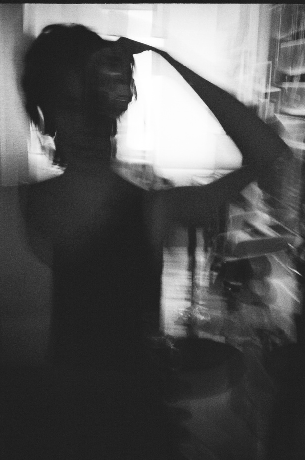

sobre
Carolina Calcavecchia é fotógrafa e filmmaker atuante no mercado há mais de 11 anos. Além de fotógrafa e filmmaker, assume também as funções de logger, operadora de câmera e assistente de edição.
Foi membro da Coletiva Era, coletivo de fotógrafas mulheres, com a qual realizou duas exposições artísticas. É parte do Teatro Caminho, coletivo artístico que investiga as relações entre cena, espaço e itinerância, desde o seu início, em 2014, sendo responsável por pensar criações audiovisuais e participando ainda das residências e processos criativos dos trabalhos. Junto ao coletivo, dirigiu dois filmes.
Fotografa campanhas de moda, ensaios artísticos e documentais, retratos, performances e espetáculos e os mais diversos eventos. Como filmmaker cria vídeos para redes sociais, colaborou com canais de Youtube, cobre eventos de diversos tipos e realiza vídeos institucionais para empresas e projetos. Em sua pesquisa autoral investiga as relações entre memória e território.
